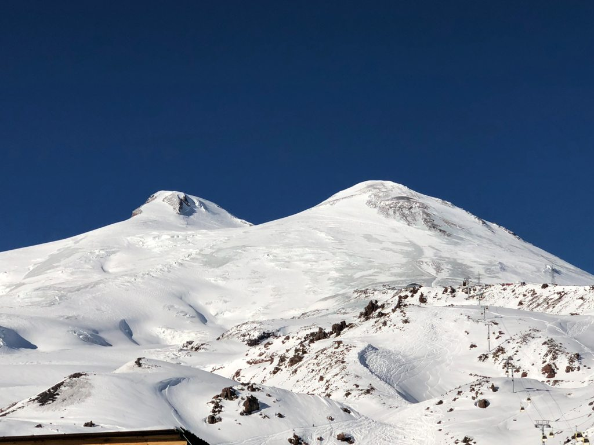

KORONA ZIEMI
KORONA ZIEMI
Elbrus (5642 m n.p.m.) / Mont Blanc (4810 m n.p.m.)
Elbrus czy Mont Blanc?
W opinii środowiska wspinaczkowego, a także twórców obu list Korony Ziemi najwyższa góra w Europie to Elbrus leżący na Kaukazie. Mierzy on 5642 m n.p.m. i wyróżnia się charakterystyczną sylwetką o dwóch kopulastych wierzchołkach. Elbrus jest drzemiącym wulkanem zbudowanym z zastygłych law.
Niestety, najwyższy szczyt Europy jest bardzo zaśmieconym miejscem. Mimo licznych akcji wolontariuszy dzika przyroda kaukaskiego szczytu nadal mocno cierpi z winy ludzi, którzy ruszają w wysokie góry bez przyswojenia sobie podstawowych zasad odpowiedzialnej turystyki.
Według niektórych naukowców najwyższy szczyt w Europie leży jednak w Alpach i jest nim Mont Blanc (wysokość 4810 m n.p.m.). Tę górę zdobyto pierwszy raz w 1786 r., a dokonali tego miejscowy poszukiwacz kryształów Jacques Balmat i doktor Michael Paccard.
Masyw Mont Blanc leży na pograniczu włosko-francuskim, a dokładny przebieg granicy w rejonie głównego wierzchołka jest od dawna kwestią sporów między tymi krajami. Paradoksalnie jednak, najwyższy szczyt Alp łączy też Francję i Włochy dzięki tunelowi wybudowanemu pod tym masywem.
Elbrus, fot. Rustam Altuev, Unsplash